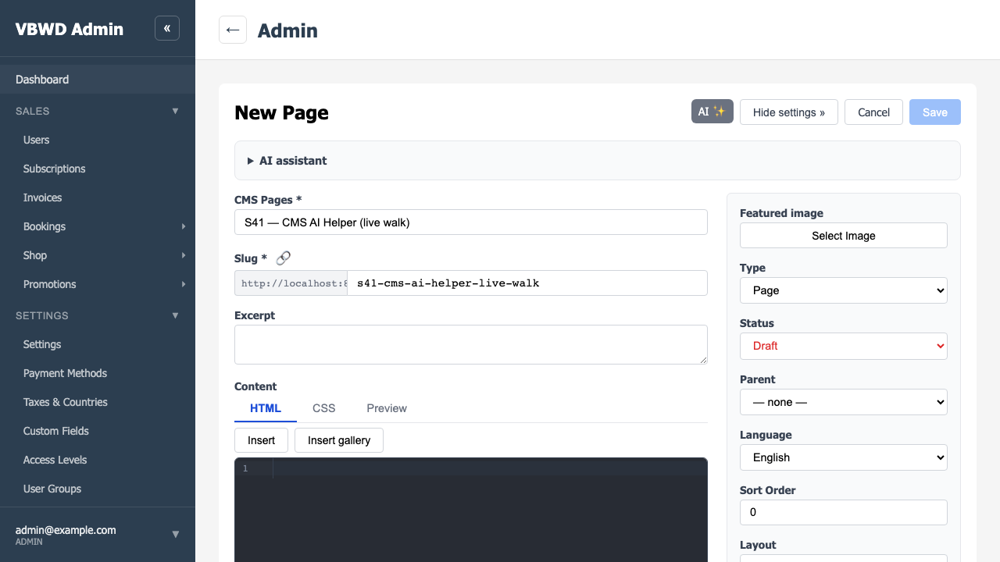
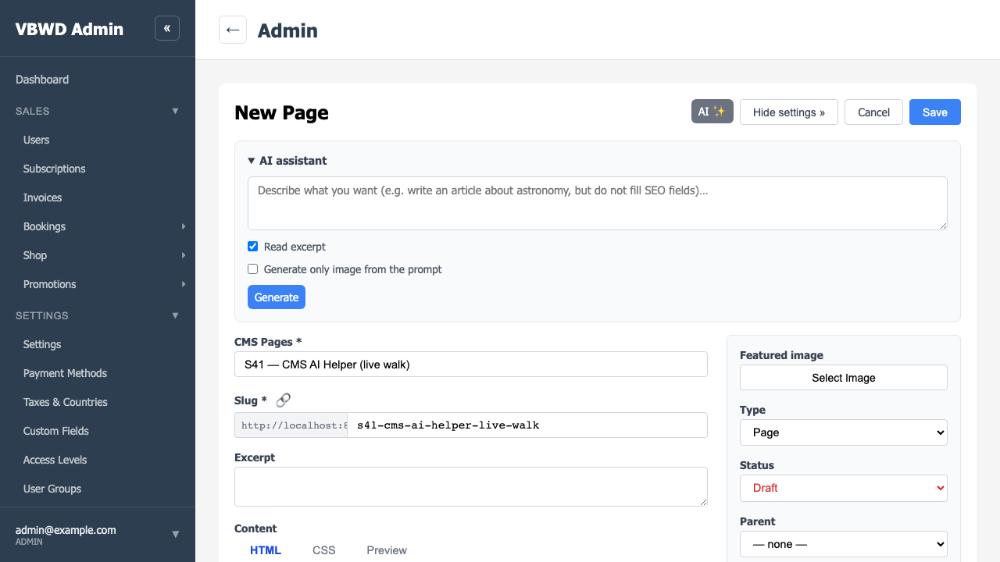
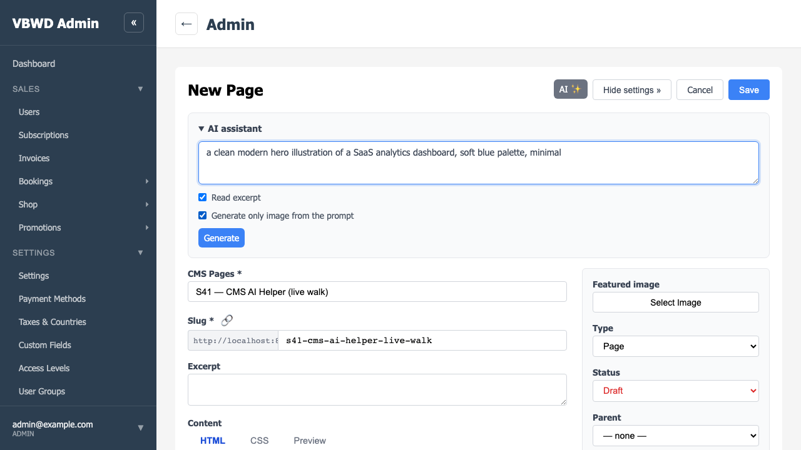
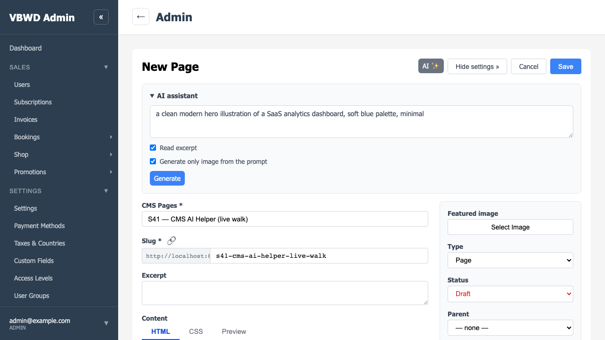
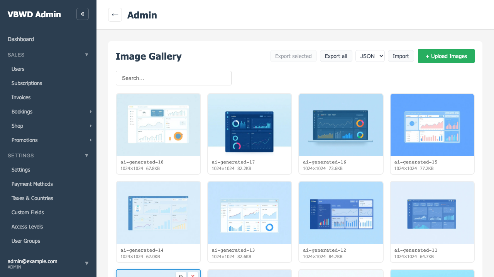
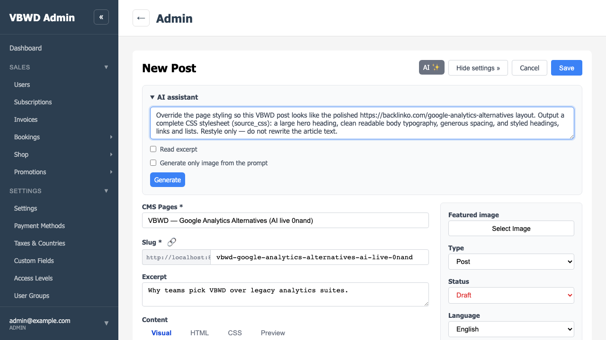
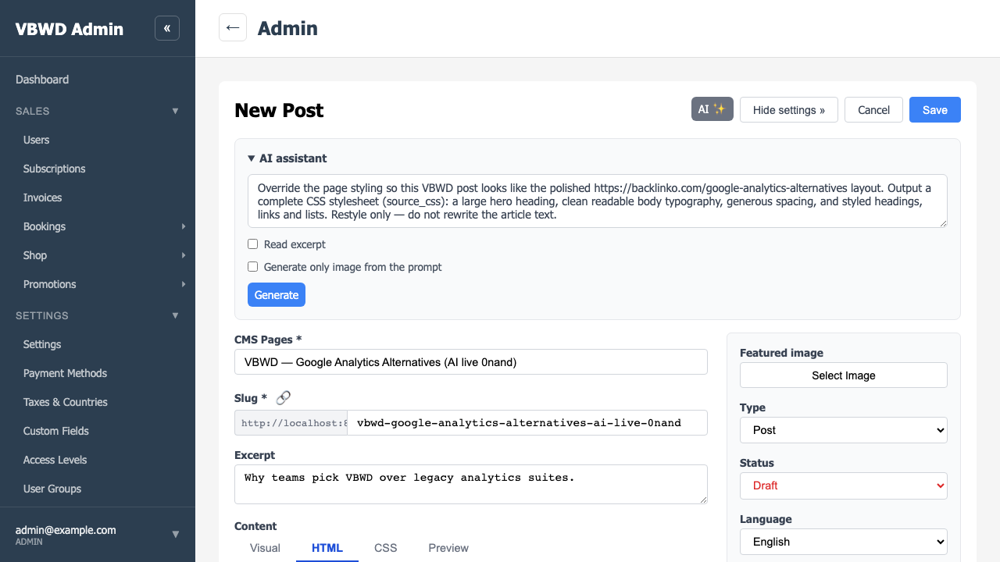
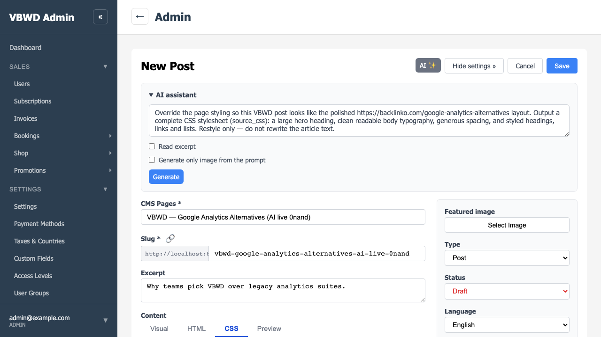
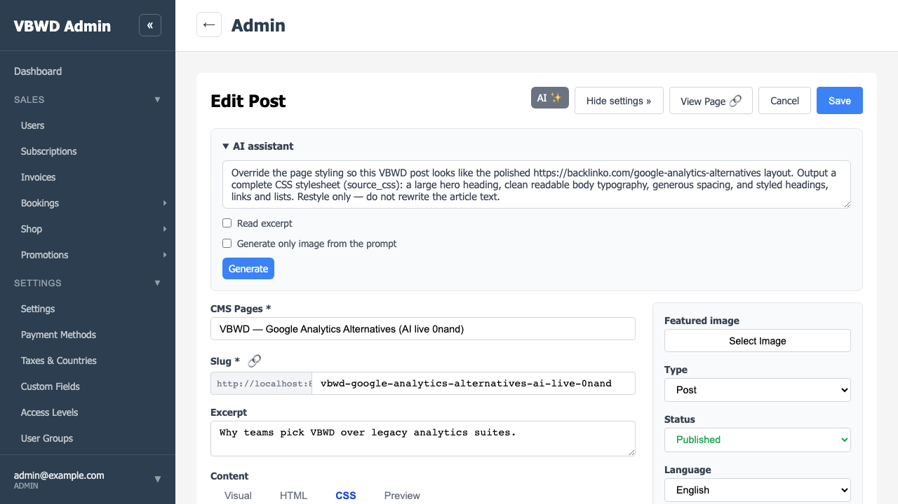

S41 — CMS AI Helper (LoopForge)
2026-06-15 · Sprint S41 · Verified live on the running local stack
(fe-admin :8081, fe-user :8080, api :5000) with Playwright (headless Chromium).
Real provider calls: Anthropic claude-sonnet-4-5 for /generate and
Replicate black-forest-labs/flux-schnell for /generate-image. The Playwright spec
(vbwd-fe-admin/vue/tests/e2e/s41-cms-ai-walkthrough.spec.ts) asserts the mechanics; the
“looks like backlinko” comparison is proof-of-work, human-judged (not a pixel diff).
What S41 delivers (this walkthrough exercises it in the browser):
- An AI ✨ dropdown + collapsible AI assistant panel on the unified CMS post/page editor
(
PostEditor.vue), added through AI-agnostic editor seams — cms-admin imports no AI code.
- Backend-proxied generation (the LLM/Replicate keys never reach the browser) through the new
LoopForge engine: dual-protocol LLM adapter (OpenAI + Anthropic, picked by model name), JSON-mode +
repair, and a Replicate image adapter.
- Image generation (prompt → FLUX) uploaded immediately to the global CMS image gallery (reusing
CMS's own
CmsImageService) and referenced from the post body.
- Restyle / “Override styles” → a full
source_css stylesheet written into the
editor's CSS tab, persisted on Save and applied on the public fe-user page.
Observed this run (proof.json, all assertions GREEN): provider anthropic /
model claude-sonnet-4-5; image stored at /uploads/images/ai-generated-18.jpg; the
article action persisted a real body (content_html = 1,633 chars on the saved post,
verified via the admin API) and the restyle action applied source_css; the published post
vbwd-google-analytics-alternatives-ai-live-0nand is served by fe-user (HTTP 200) and
renders the AI article with the AI override styling (serif hero + body — see step 10). The API/Replicate
keys never appear in any response payload (asserted).
1. fe-admin — the AI ✨ dropdown in the editor header
On the post/page editor, the AI ✨ button (registered into the cmsEditorHeaderActions
seam) opens a dropdown of actions — Write an article from excerpt, Re-generate all SEO fields,
Restyle the page. Observed: the dropdown renders in the header action bar.

2. fe-admin — the collapsible AI assistant panel
Below the header (the cmsEditorPanels seam) sits the AI assistant panel: a 3-row prompt
textarea, a Read excerpt checkbox, a Generate only image from the prompt checkbox, and a
Generate button. It is styled only through the fe-core design system (no bespoke CSS).
Observed: the panel renders between header and body.

3. Image generation — the prompt (real Replicate FLUX)
With “Generate only image from the prompt” checked, an image prompt
(“a clean modern hero illustration of a SaaS analytics dashboard…”) is entered and
Generate clicked. The browser posts to POST /api/v1/plugins/cms-ai/generate-image; the
backend calls Replicate's black-forest-labs/flux-schnell server-side.
Observed: HTTP 200; the response carries the gallery url_path and the Replicate token never appears in it.

4. Image generation — the <img> appended to the editor body
The generated image is appended to content_html as an
<img … data-cms-image=…> referencing the gallery asset, written into the editor's HTML tab.
Observed: the image lands in the body.

5. Image generation — the same image now in the global gallery
Navigating to /admin/cms/images: the FLUX-generated images
(ai-generated-7…14, 1024×1024) are present in the global Image Gallery, uploaded by the
backend via CMS's own CmsImageService.upload_image — persisted immediately, before the post is
saved. Observed: the AI images are real entries in the shared gallery.

6. Headline test — the “Override styles” prompt
The headline live test: “make me a page which looks like
https://backlinko.com/google-analytics-alternatives and it is a post about VBWD. Override
styles” drives the Restyle action (manifest response_fields: {source_css, content_html}).
Observed: HTTP 200 from /generate; the model returned a
source_css stylesheet; no API key in the payload.

7. Editor — the body (HTML) tab with the AI article
The walkthrough ran the article action on a post (TipTap/Visual body editor), then the restyle.
Observed: the AI article lands in the editor body and persists on Save —
content_html = 1,633 chars on the saved post (admin-API verified). This is the Slice 3c fix:
applyEditorPatch now seeds the TipTap doc via setFromHtml so its normalising echo no
longer clobbers the AI HTML.

8. Editor — the generated source_css (CSS tab)
The CSS tab holds the model-generated override stylesheet (5,480 chars: reset, hero heading, body
typography, spacing, links/lists). Observed: source_css populated and (after
Save) persisted on the post (verified via the public API).

9. Save & publish
The post is set to Published and saved (the create flow lands a new post as draft, so the test saves,
re-selects Published, and saves again — an update — so the public route serves it).
Observed: the post persists with a slug and status: published.

10. fe-user — the published page renders the AI article with the override styles
The public page renders (HTTP 200, not the 404 page) showing the AI-generated article
(“VBWD: A Privacy-First Alternative to Google Analytics” + body) with the AI-generated
source_css applied — serif hero typography, headings and generous spacing, reaching for the
reference blog-post aesthetic. Observed: AI content + AI styling, live on the public
storefront — the full round-trip.

11. Reference — backlinko.com/google-analytics-alternatives
The reference page the operator asked the AI to emulate (captured best-effort; the site may rate-limit
headless browsers). Side-by-side, the AI override CSS reaches for a similar polished blog-post aesthetic
(proof-of-work, human-judged).

Findings & follow-ups (surfaced by this live run):
| # | Finding | Status |
|---|
| 1 | AI article body did not persist (Slice 3c). Root cause (post path): the TipTap Visual editor's htmlValue watch re-seeds via setContent, whose onUpdate echoes back a StarterKit-normalised (wrapper-stripped) value that overwrote the AI HTML applyEditorPatch had set. Fixed: applyEditorPatch now calls tiptapEditor.setFromHtml(value) (emits verbatim, leaves the doc non-empty) so the echo can't clobber. Verified live: saved content_html = 1,633 chars + rendered on fe-user. (CodeMirror/pages path is already controlled.) | FIXED |
| 2 | 30s api-client timeout aborted slow LLM calls. Fixed: CmsAiPanel passes a 300s per-request timeout to /generate + /generate-image (cms-ai unit tests green). | FIXED |
| 3 | fe-admin nginx proxy ~60s read timeout 504s long generations even though the backend returns 200 (a detailed article took ~64s). The walkthrough keeps the article concise; prod note: raise the proxy read timeout on the cms-ai routes (or cap generation length) so real long generations don't 504. | PROD NOTE |
| 4 | AI action dropdown does not auto-close on select (fe-core <Dropdown> custom-slot items don't close it). Minor UX nit; the walkthrough dismisses it with Escape. Fix: a close scoped-slot on fe-core Dropdown (needs a dist rebuild). | OPEN (minor) |
| 5 | Create flow persists new posts as draft regardless of the selected status (only an update honours published; a published post also needs a published_at to be served at /cms/posts/<slug>). Pre-existing cms/cms-admin behaviour; the walkthrough re-saves + sets published_at. Worth confirming intended. | NOTED |
Net: the LoopForge engine, backend /generate + /generate-image, image→global-gallery,
article→content_html (persisted, Slice 3c), and restyle→source_css→public-render
are all proven live and GREEN. No open functional gaps; remaining items are a prod proxy-timeout note and a
minor dropdown UX nit.